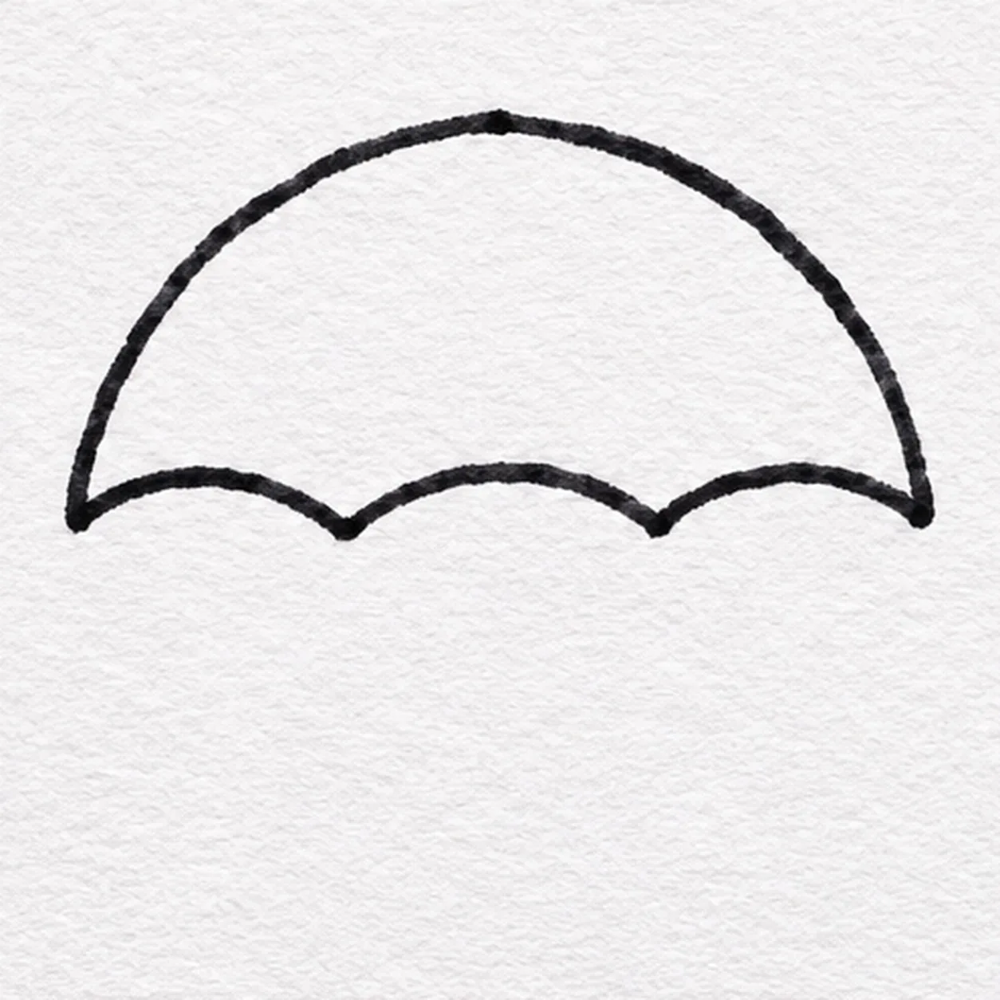
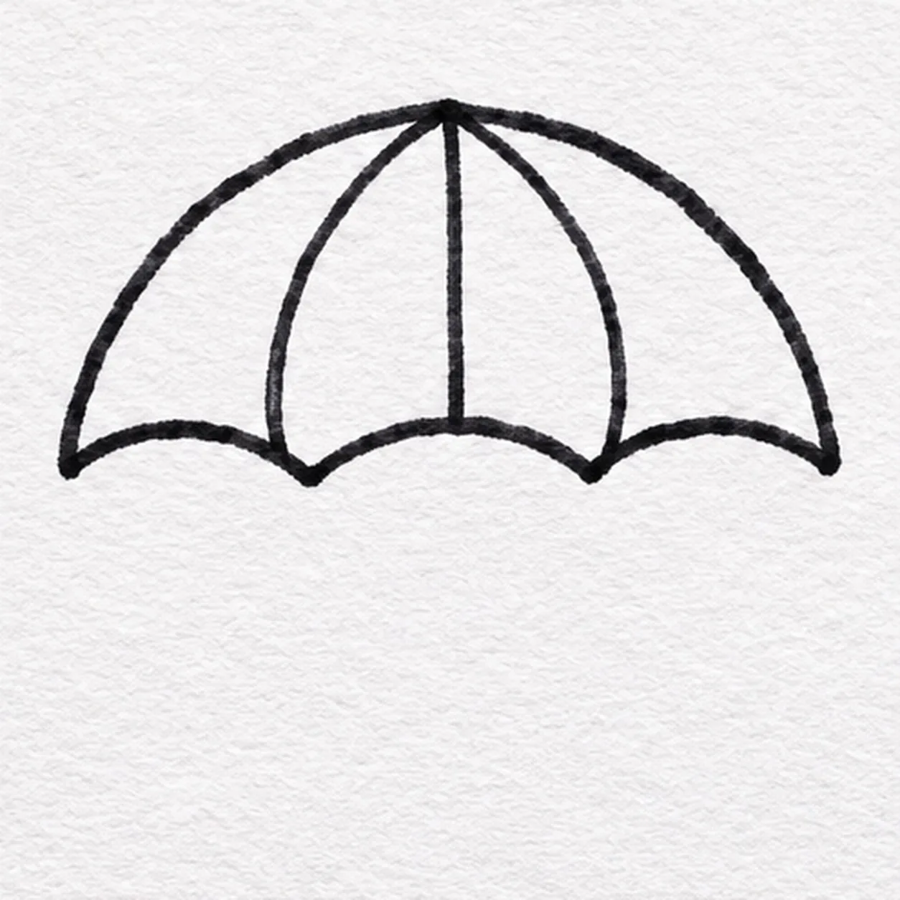
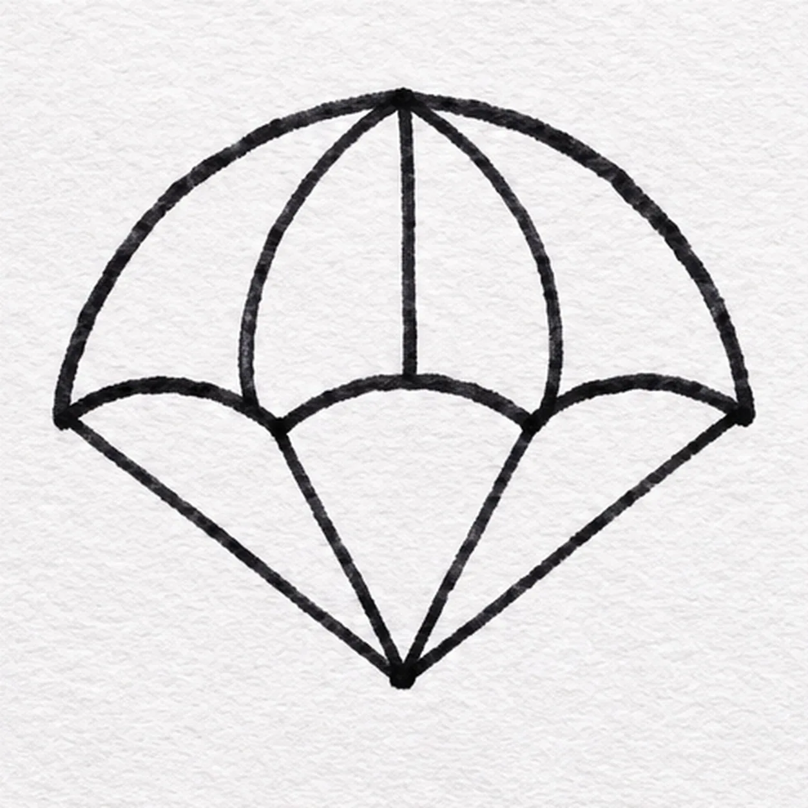
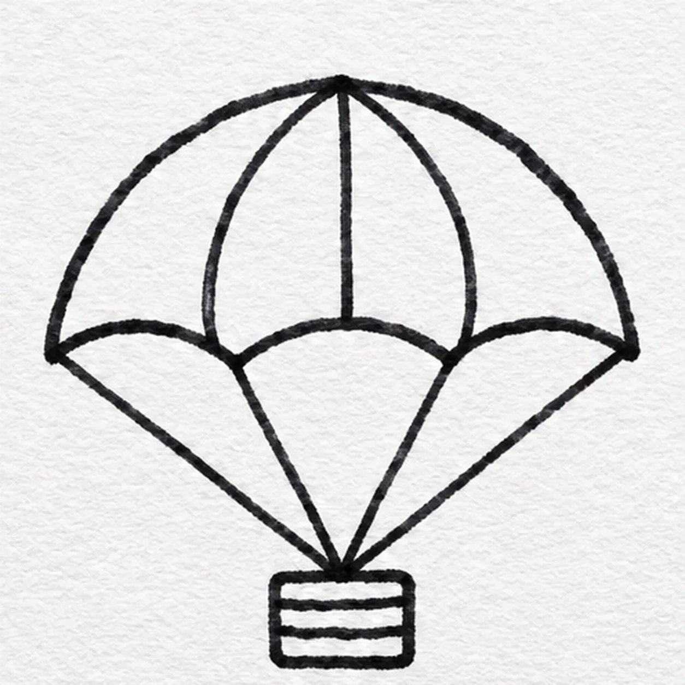
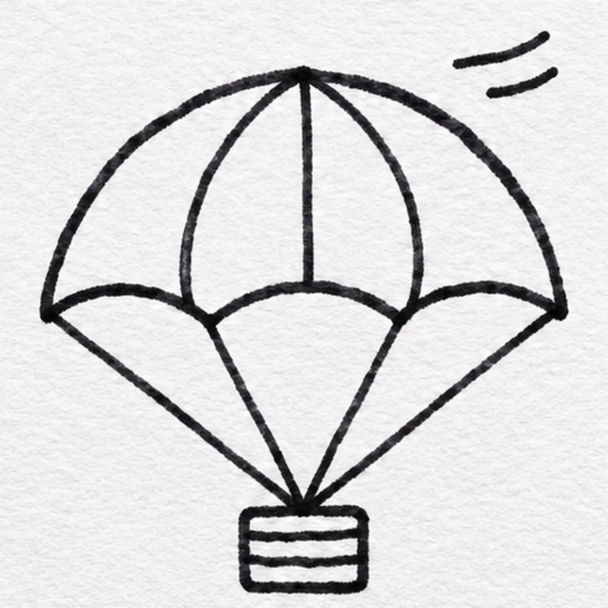

Felt-tip marker mode
Let’s draw a parachute
Treat this as one playful practice round: sketch the idea loosely, simplify the shapes, then commit with confident marker outlines and bright fills.
-
01

Draw the canopy
Draw one wide dome with a three-scallop lower edge.
Marker tip: Keep the dome wide enough for four color sectors.
-
02

Divide the stripes
From the canopy apex, draw three curved division lines down to the scallops, making four color sectors.
Marker tip: Aim all three seams at the same top point.
-
03

Drop the cords
From the four lower canopy points, pull four cords toward a single point centered above the future basket.
Marker tip: Count four separate cords before drawing the basket.
-
04

Hang the basket
Draw a small rectangular basket directly under the cord junction, then add two horizontal weave bars.
Marker tip: Keep the basket small so the canopy remains the focus.
-
05

Suggest a float
Place two short motion dashes beside the canopy without moving any other part.
Marker tip: Place both dashes outside the canopy.
-
06
Color the canopy
Color the established canopy stripes coral, yellow, teal and blue; add brown to the basket without changing outlines.
Marker tip: Let paper flecks show through the marker fills.